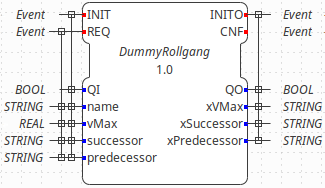
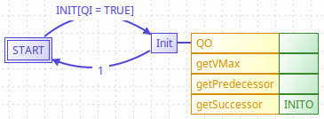
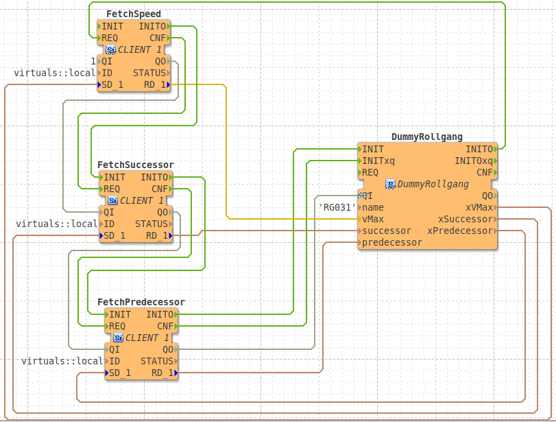

git clone https://github.com/BaseXdb/basex.git
Access BaseX Database With XQueries
This section will show you how to make applications communicate with a BaseX database through XQueries. This allows a component, to initialize itself by accessing its asset administration shell, in terms of an XML database. The component is controlled by a specific function block, which produces XQueries to initialize its inputs with values received or calculated from a BaseX database.
The section is divided into three parts. The first part explains how to build 4diac FORTE to run an application which sends XQueries. The second part explains how to setup your BaseX database. And the third part shows how to create an application within the 4diac IDE which sends XQueries. The example AutomationML file as well as this implementation has been realized as part of the BaSys4.0 project, which receives funding of the Federal Ministry of Research, Technology and Space.
This integration has been tested on Ubuntu 24.04 with BaseX 10.4. Please use a BaseX server of the same version than the client.
Build 4diac FORTE to run an Application which sends XQueries
There are two possibilities to build 4diac FORTE, either manually by setting the cmake options or by the 4diac FBE.
Build 4diac FORTE manually
At first download the version with the desired tag of BaseX from GitHub to get the C API from BaseX.
In the downloaded folder you find the C API under …/basex-api/src/main/c.
The version of the C API should match the version of your BaseX server.
Then configure CMake to build the 4diac FORTE. If you do not know how to build the 4diac FORTE read the build instructions first. Besides the usual configuration activate the Xquery Client in the 4diac FORTE CMake configuration:
FORTE_COM_XqueryClient=ON
Press the Configure button in CMake to get the settings for the Xquery Client.
Configure the appearing settings.
Under Linux the openSSL include directory might be at /usr/include/x86_64-linux-gnu/openssl.
The openSSL libraries libcrypto.a and libssl.a might be at /usr/lib/x86_64-linux-gnu/.
FORTE_BASEX_SRC_DIR=path_to_the_C_API_of_BaseX_which_you_downloaded OPENSSL_INCLUDE_DIR=path_to_openssl_include_files OPENSSL_LINK_DIR=path_to_openssl_libraries
Press the Configure button within the CMake GUI until none of the lines is red. Afterwards press the Generate button of the CMake GUI. Then build the 4diac FORTE.
Build with 4diac FBE
To compile 4diac FORTE with the build environment, create a configuration that contains the following dependencies as well as the communication system XquerClient.
DEPS=libressl DEPS=basex@10.4 COM=ETH,FBDK,LOCAL,XqueryClient
Follow the instructions shown on the GitHub repository of the 4diac FBE.
The configuration folder of the 4diac FBE also contains an example configuration test-xquery.txt.
Setup your BaseX Database
Get BaseX for your system from here. After starting the BaseX, load your AutomationML or XML file into BaseX by clicking Database/open and manage. As an example AutomationML file you can use the Pallet System Model. This example AutomationML file has been created during the BaSys4.0 project, which receives funding of the Federal Ministry of Research, Technology and Space. Within the General tab enter the path to your file and select the proper input format. In case you use an AutomationML file or XML, choose XML. Then press OK. Your database will be loaded. Then a user and a password is needed to access the created database. To create it, select command within the drop down under the menubar and type the following commands into the field next to it.
> create user test > grant write to test
You can now test any XQuery within the GUI of BaseX. For further explanation or in case of any problems please have a look at the manual of BaseX.
To start the entire BaseX server change to the bin directory of your BaseX installation. Start the BaseX server there. The output should be the BaseX version and the port where you can reach your database.
> ./basexserver BaseX 10.4 [Server] Server was started (port: 1984).
In case you used the Java implementation of BaseX the following command will start the BaseX server. Replace the version number of the following line by the version number of the JAR file you downloaded.
> java -cp BaseX104.jar org.basex.BaseXServer BaseX 10.4 [Server] Server was started (port: 1984).
Create an Application to send XQueries to BaseX
To send XQueries to your database, create a proper basic function block, which produces the desired XQueries.
The following images show a possible interface and execution control chart for a basic function block which fetches values from your BaseX database during initialization.
A proper example, called Xquery, is also provided within the 4diac examples repository.
 
The algorithm getVMax contains an XQuery which is supposed to calculate the maximum speed of a roller conveyor from values of the database. Since the 4diac IDE currently does not provide support for an XQuery algorithm language, you have to provide it as a String. Your XQuery is assigned to the desired STRING output of your basic function block, in this case xVMax. In case you also want to replace certain elements in your XQuery, maybe by values from your function block’s interface, you have to split the String. The interface value is then added as parameter of the CONCAT function, supported by the 4diac FORTE, e.g. name. The rest of your XQuery is appended afterwards. Consider that any special character has to be escaped by a $ as it is shown within following algorithm code for getVMax.
xVMax := CONCAT('xquery ', STRING#'let $$name := $'', name, STRING#'$' ',
'let $$component := //InstanceHierarchy/*/InternalElement[@Name=$$name] ',
'let $$compType := tokenize($$component/RoleRequirements/@RefBaseRoleClassPath/data(),$'/$')[last()] ',
'let $$rollerTable := $$component/InternalElement/RoleRequirements[contains(@RefBaseRoleClassPath,$'RollConveyor$')]/.. ',
'let $$rollDiameter := $$rollerTable/Attribute[@Name=$'RollDiameter$']/Value/data() ',
'let $$link := tokenize($$component/InternalLink/@RefPartnerSideA/data(),$':$')[1] ',
'let $$motor := //InternalElement[@ID=$$link]/RoleRequirements[contains(@RefBaseRoleClassPath,$'ElectricMotor$')]/.. ',
'let $$gearFactor := $$motor/Attribute[@Name=$'Gearfactor$']/Value/data() ',
'let $$rotSpeed := $$motor/Attribute[@Name=$'Rotational Speed$']/Value/data() ',
STRING#'let $$linSpeed := $$rotSpeed div (60.0 * $$gearFactor) * (2.0 * 3.1416 * 0.5 * $$rollDiameter) ',
STRING#'return round-half-to-even($$linSpeed, 3)');
The XQuery algorithm code for getPredecessor could be as follows:
xPredecessor := CONCAT(STRING#'xquery ', STRING#'let $$name := $'', name, STRING#'$' ', STRING#'let $$links := //InstanceHierarchy/InternalElement/InternalLink ', STRING#'let $$cp := //InstanceHierarchy/*/InternalElement[@Name=$$name] ', STRING#'let $$id := $$cp/@ID/data() ', STRING#'let $$succId := tokenize($$links[contains(@RefPartnerSideB, $$id)]/@RefPartnerSideA, $':$')[1] ', STRING#'let $$successor := //InstanceHierarchy/*/InternalElement[@ID=$$succId] ', STRING# 'return $$successor/@Name/data() ');
The XQuery algorithm code for getSuccessor could be as follows:
xSuccessor := CONCAT('xquery ', STRING#'let $$name := $'', name, STRING#'$' ',
STRING#'let $$links := //InstanceHierarchy/InternalElement/InternalLink ',
STRING#'let $$cp := //InstanceHierarchy/*/InternalElement[@Name=$$name] ', STRING#'let $$id := $$cp/@ID/data() ',
STRING#'let $$succId := tokenize($$links[contains(@RefPartnerSideA, $$id)]/@RefPartnerSideB, $':$')[1] ',
STRING#'let $$successor := //InstanceHierarchy/*/InternalElement[@ID=$$succId] ',
STRING# 'return $$successor/@Name/data() ');
Please consider that your XQuery is dependent on the data structure of your database. In this case it is the structure of an AutomationML file for a Pallet System. After you have created your test function block, export it and build your 4diac FORTE with it. Please have a look at the build instructions if you do not know how to build your own function block, or use the 4diac FBE.
Now you can use your test function block within an application.
To send the XQueries to your BaseX database, add a CLIENT_1 for each query you want to send.
Please consider that currently only a CLIENT_1 is supported, where you connect the SD_1 input with the xquery producing output of your test function block.
The result of the XQuery is received by the RD_1 output.
A possible test application is shown in the following image.
Within this application a roller conveyor is initialized by its maximum speed, and its neighbouring roller conveyors.

The ID input of the CLIENT_1 function block contains a constant virtuals::local which is replaced by the corresponding value during deployment.
The ID is configured with the protocol name, the IP address of the computer, where your BaseX database is running, the port where your BaseX server listens for requests, the name of your database, a user name and a password.
For the example database running on your local machine, the ID can be as follows:
xquery[127.0.0.1:1984; BaSys_PalletSystem_Model; test; test]
After you have completed your application, map your application to a proper device and start the 4diac FORTE you built before. Then deploy your application to the 4diac FORTE you started. If everything worked correctly the 4diac FORTE should produce something like that:
INFO: T#00ms: FORTE is up and running INFO: T#00ms: Using default bootfile location: forte.fboot INFO: T#00ms: Boot file forte.fboot could not be opened. Skipping... INFO: T#0100722ms: Connection closed by peer INFO: T#0100737ms: Connected to DB. INFO: T#0101026ms: DB BaSys_PalletSystem_Model opend.
If you monitor your application you should get the results from the XQuery requests at the corresponding inputs of your test function block.
Where to go from here?
-
Go back to Protocols index:
Communication Index -
If you want to go back to the Start Here page, we leave you here a fast access
Start Here page
Or Go to top